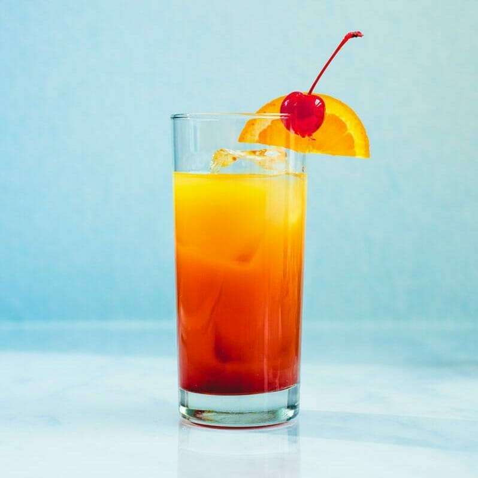

Tequila Sunrise

Description
This pretty drink with layers of orange juice and grenadine is delicious on a hot day. The fact that the ratio of juice to tequila is high makes it a good choice for a brunch cocktail.
Ingredients
- 1.5 fluid ounces resposado tequila
- 3/4 cup freshly squeezed orange juice
- ice cubes
- 1.5 fluid ounces Grenadine Syrup
- 1 slice of orange, for garnish
- 1 maraschino cherry, for garnish
Steps
- Stir or shake together tequila and orange juice.
- Fill a chilled 12 ounce glass with ice cubes; pour in orange juice mixture.
- Slowly pour in the grenadine, and allow it to settle to the bottom of the glass (be patient).
- Garnish with a slice of orange, and a maraschino cherry.